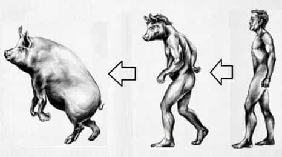

< < < Back
Is Modern Man Becoming A Sexual Scavenger? – Return Of Kings
With the rise and spread of feminism in the modern world, the options for a man to find a good, virtuous mate have been drastically reduced. Men thus have the following options to choose from:
- Learn game to sleep with as many women as possible, and put off commitment as long as possible
- To go in for relationships with modern, feminist women
- To live the life of a beta/white knight/mangina who supplicate with women for sex and commitment
- To choose a life of celibacy and renounce women
- To travel to find a “good” woman in traditional societies which have not been touched by the disease of feminism
The last option is a difficult (yet achievable) option for men, who must travel away from existing feminist societies in the western world to achieve that goal. For other men (specifically those who choose the second and third options), these choices carry huge risks of transforming these men into sexual scum “scavengers”.
Scavenger (noun):
1. An animal that eats on dead plant material, carrion, or refuse.
2. A person who searches for and collects discarded items.
Even the man choosing the first option—the player armed with game—is choosing to “scavenge” scum at some point in his life, considering that most modern feminism-bred women have morals of scum, especially when it comes to sex. But still, his promiscuity with such women is not actually “scavenging” (the reason why will be further explained below).
Compared to other men, the player still has the option to sleep around with women of his choice even if chances are that he may not always be able to choose whom to have sex with. Armed with game and a developed skill of determining women’s psychology and character by both observation and experience, his greater option lies in being able to choose women of his choice when it comes to commitment, and on some occasions his game also helps to snag a “good” woman.
Yet most of the time, he is socially accused of pig-like sexual “scavenging” (a common feminist derision of non-committing players or sexually active men), without understanding what sexual “scavenging” actually means.
Who’s at risk, and what is sexual scavenging?
The player, who sleeps with sluts, is in fact, not a sexual scavenger. The beta, who chooses to commit to a slut, is in fact a pig-like sexual scavenger. Why?
Scavengers eat refuse and don’t leave leftovers of it. They search for and collect discarded items. That’s exactly what the beta (or any other man) who commits to a slut, becomes. The player—even if chooses to sleep with a slut—does not fall in the scavenger category, as long as he does not commit to her. Sampling a slut is separate and different from committing to a slut.
Commitment thus demarcates male promiscuity from male sexual scavenging.
The average beta often makes the choice of settling down with a woman who’s had her share of men in her prime. But what is he? Isn’t he then choosing to scavenge for life, the discarded sexual leftovers of men who’ve used that body for casual sperm injections before? Thus for men choosing the second and third options mentioned earlier above, the risks of actually becoming a sexual scum scavenger are huge.
The dilemmas for modern men
With the majority of modern women being bred in the scum of feminist ideology, the average modern man in a feminist society who chooses not to learn game to interact and sleep without commitment with typical modern slutty women will often lose sexual access due to his own limiting beliefs. His sexual life is then fraught with greater dilemmas of choosing either to masturbate or scavenge women who’ve been used before (by committing to them) since he won’t learn game.
Players, PUAs or any other men with game or red pill wisdom understand these dilemmas and thus avoid this pitfall. The hypocrisy from society they usually face later is when the same feminist society, which incipiently created a permissive and promiscuous environment of commitment-unworthy sluts around them (while ironically taking no blame for creating these very conditions), later reviles these men by calling them “PIGS.”
And what is their crime to deserve this title? They chose to seduce without committing to these sluts. But realistically, they were often just pumping their wild oats in women—who’d already been programmed by modern feminism—to slut it around and celebrate it.
Why didn’t (or don’t) these men commit?
Modern feminist societies, celebrating the sluttiness of women, have taken away the responsibility of self-imposed chastity and decorum from the shoulders of average modern women, as compared to their predecessors. With the acceptance and rise of female promiscuity, social prostitution and “liberated” sexual decadence in modern societies, men—armed with game, money and understanding of female psychology—have the chance to experience more sex than ever before. Yet with each new sexual conquest, the distrust of the opposite sex ironically increases in the male mind when it comes to the perception of sexual chastity of modern women in general.
Right from primitive times, a man’s woman—in the context of a committed relationship—was a symbol of his inviolable “honor” and, more importantly, social respect. Women were traditionally pursued for marriage by taking into consideration their lineage, beauty, wealth, status and virtue (not necessarily in that order).
In modern times, however, with the destruction of female virtue due to feminism, the “honor” and social respect of men in the context of relationships has itself become undermined and threatened due to stooping levels of typical modern women’s virtue. Men with game or red pill wisdom who are aware of this truth thus choose to sidestep the snare of commitment to these (unworthy) women.
The slut-wifing beta in comparison
But this undeniable truth is often ignored by feminism-brainwashed, thirsty beta men who are often willing to commit to “save” modern slutty women (or actually themselves from sexual famine). The “savior”complex in relationships (to save sluts through commitment to prospectively save his own sex life), is common among these feminism-bred betas. The result? The slut-saving, white-knighting beta often willingly chooses an unenviable fate for himself.
Because his dishonorable choice to wife-up other men’s cum dumpsters is what actually constitutes as sexual scavenging, isn’t he then the actual pig? By choosing to mate up with a sow-like woman like her, he actually ends up collecting and having sex with a woman who’s a sexual left-over (discarded sexual refuse) of other men, much like an actual pig eating refuse.
There is nothing honorable in it for a man, for no slut deserves “love” or help—and certainly not commitment. The lesson to be learnt here for men is that when forced to sexually adapt in a typical modern society of feminism-bred, slutty scum-like women, male sexual scavenging is infinitely worse than uncommitted male sexual promiscuity. Opting to choose a life of potential cuckolding and having sex with a slut via lifelong commitment is incomparably worse than having sex with a slut (or sluts) without commitment.
The path of transformation to a sexual scavenger
But in spite of these underlying truths, the defeatist soul of the slut-wifing beta disregards them, nor does it chastise him for thinking that he couldn’t find someone better, thus successfully completing his transformation into a sexual scavenger.

Feminist society, in fact, encourages and lauds him by rationalizing his sexual scavenging as a “noble” deed of “manning up” (and often exemplifying him to other men, with the social goal to similarly provide future partners for used up sluts). It also puts social tusks on his snout like a boar, to target the men who didn’t (or don’t) fall for the same bait as he did. Nevertheless, both these traits are often mutually non-exclusive and found together in these men.
You’ll find a lot of men willingly choosing or subtly forced to undergo this subtle transformation of sexual scavenging in modern feminist societies. Thus, has not the average modern man become—or reduced himself to—a sexual scavenger of scum?
Read More: Why There Will Always Be A Sexual “Double Standard”


{kind=link}
{kind=link}
{kind=link}
{kind=link}